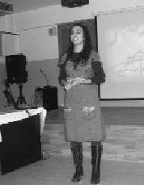
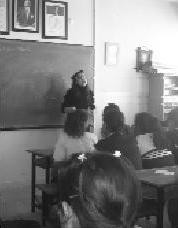

|  Benim için TUP, insan hayatına küçücük de olsa dokunabiliyor olmanın verdiği büyük mutluluk… Her seminerde gözlerimin mutluluk ve heyecandan dolması, her seminer sonrası gözlerdeki sevinç ışığı, her seminer sonrası bu ülkede güzel şeyler olduğuna, olacağına duyduğum güven. Ve benim için TUP, hayatımdaki büyük sihir… (Aslı Akyol) |
 Gelecek aydınlık olacaksa eğer, gerçekten; sırf bu projenin ışığı bile yeter. Dürüstlüğün, samimiyetin, yurt sevgisinin, girişimciliğin ve birçok değerin anlam kazandığı bu projede, Türkiye Uğur Böcekleri Projesi'nde, anlam kazanabilmek temennisiyle... (Ayşe Atalar) |
Aslı'yla Ayşe'yi beraber anlatacağım. Resimlerini de yan yana istedim. Bu iki kankayı hep karıştırdım. Onlar da bundan büyük keyif aldılar. Bu büyük yürekli iki dostun, projenin Antalya'ya taşınmasında büyük katkıları oldu. Arı gibi çalıştılar. Bugün proje Antalya'da yaşıyorsa bu iki atom karıncanın büyük emeği vardır.